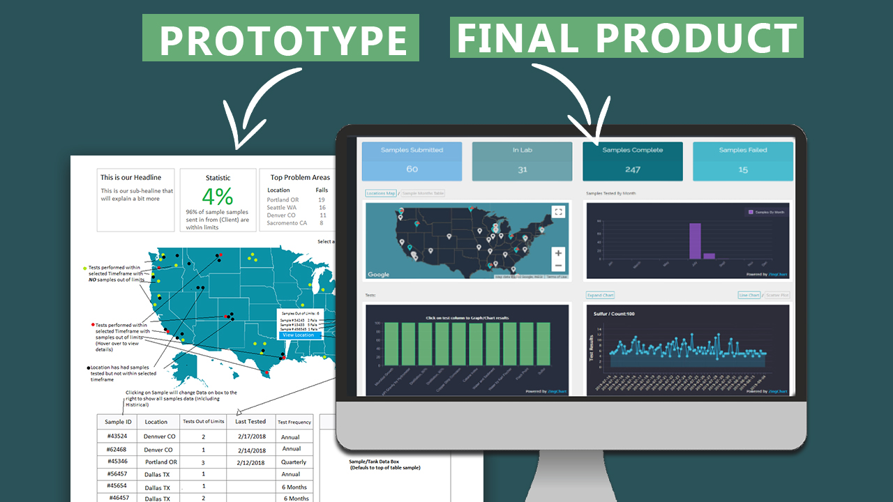
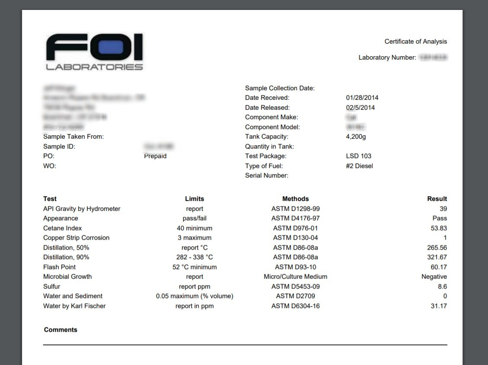
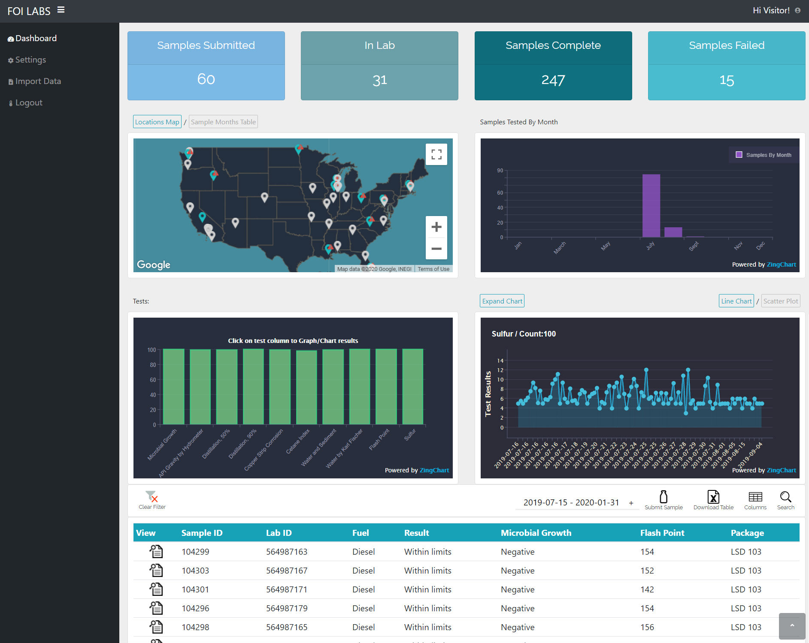

Portfolio Website
As part of my first-year computer science studies, I developed a personal portfolio website using HTML, CSS, and JavaScript. This project was a way for me to showcase my skills and projects, as well as gain hands-on experience in web development.
The website features multiple sections, including an About Me page, a Projects showcase, and a Contact form. It’s fully responsive, ensuring a smooth user experience across different devices, and includes interactive elements such as theme toggles and animated icons.
Although this was one of my early projects, it helped me strengthen my understanding of front-end development and responsive design while giving me a platform to highlight my growing skills and learning journey.
Technologies:
- - Python
- - Django + Django REST Framework
- - React JS
- - Postgres
- - AWS (S3 & RDS)
- - Zingcharts - Trending & graphing test results
- - Google Maps API
- - XML2PDF - PDF generator
Laboratory Admin Dashboard

Sample ID Form

Results Input Fields

PDF Report (Automaticly Generated)

Customer Dashboard
